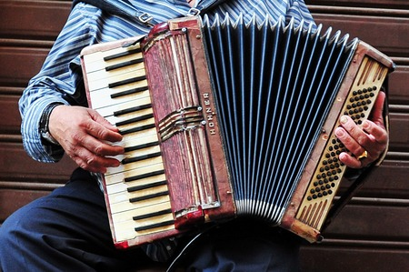
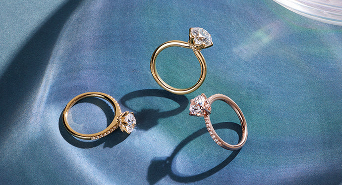
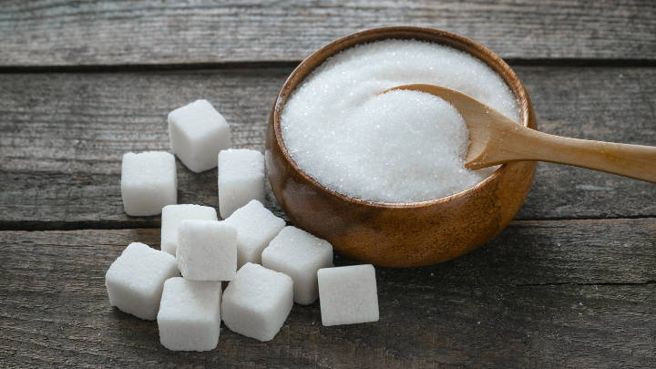

Introducción:
En esta página encontraremos las palabras más comunes para la letra A
- Acordeón: Instrumento musical de viento, formado por un fuelle cuyos dos extremos se cierran por sendas cajas, especie de estuches, en los que juegan cierto número de llaves o teclas que permiten seleccionar los sonidos. 
- Anillo: Aro de metal u otra materia, liso o con labores, y con perlas o piedras preciosas o sin ellas, que se lleva, principalmente por adorno, en los dedos de la mano. 
-
Árbol: Planta de tallo leñoso y elevado, que se ramifica a cierta altura del suelo.

-
Avión: Aeronave provista de alas, cuya sustentación y avance son consecuencia de la acción de uno o varios motores.

- Azúcar: Sustancia cristalina perteneciente al grupo químico de los hidratos de carbono, de sabor dulce y de color blanco en estado puro, soluble en el agua, que se obtiene de la caña dulce, de la remolacha y de otros vegetales. 